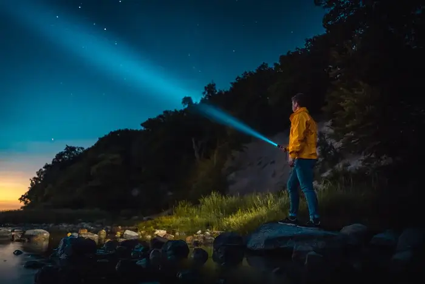
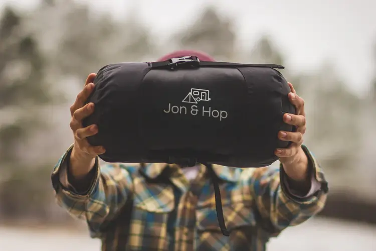

how to survive the apocalypse
We have found the top things you will need to survive the impending apocalypse. You'll find everything from backpack essentials to how to start a fire. Check out the rest of our site for camp set-up tips and how to defend yourself against The Infected.
Click on the links below to go to each section, or you can take the scenic route and scroll.

Top Ten Backpack Essentials
1. Military Tactical Backpack
Though it is not ideal, there is a good chance that you will be moving a lot during the apocalypse or at the very least going out for supplies, once you no longer have stuff in your bunker. This massive assault backpack can help you collect three days of supplies. The durable bag has a host of features that include heavy-duty zippers and utility-style cord pulls, Side and front load compression system.

2. Swiss Army Pocket Knife
Even at the moment, you should be carrying a Swiss Army Knife around as these handy multi-tools literally embody the “be prepared” mantra. Swiss Army Knives are easy to use and are mini mobile toolboxes that will allow you to tackle the task on the fly. A swiss army knife is a given during the apocalypse.
3. Water-resistant Torchlight
A tactical weapon like this should be in your arsenal. In this apocalyptic world, getting a hold of a light source will be no easy feat. Even more so, finding a long-lasting light source can mean the difference between life and death when out for supplies. Binwo’s Super Bright 2000 Lumen tactical light is a water-resistant light that is going to be godsent in the apocalypse.

4. Lifesaver 4000UF Bottle
One of the first things you need to do in a survival situation is to find shelter and water. However, you are not guaranteed a clean water source when you actually find one. The Lifesaver Water Filtration Filter Bottle Purifier kit could literally save your life removing 99.9% of viruses, chemicals, bacteria, etc.

5. Compact Binoculars
Your safety out in the world will also be dependent on your ability to stay vigilant and see what is happening around you day and night. These compact binoculars will help you see at tremendous distances both in the day at night. But before you do so, make sure you find the high ground first.
6. First Aid Kit
Similar to the Swiss Army Knife, you should keep around a First Aid Kit to simply be prepared for the worse. Even more so, this First Aid Kit is Waterproof and can be easily transported. Hopefully, you will not have to treat any zombie bites in the near future.
7. Sleeping Bag
You will not want to be lying around on the cold wet bare ground. Even more so, this can eventually end up exposing you to the elements causing you to get sick. A sleeping bag can also double as a temporary shelter.
8. Paracord
Getting ahold of the right cords might seem like a small or easy feat, but it is not. Even more so finding a durable rope is tricky. A parachute cord like this can be used to string up a hammock, rig your sails, secure your tent or make an emergency tourniquet.

9. Skinning Knife
If you manage to catch any animals while you forage, you'll need the right knife to get the job done. A skinning knife will help separate the meat and harvest the skin cleanly. It may even come in handy against an Infected.
10. Utility Shovel
One of the best tools to have is a utility shovel. Why have a regular shovel when you can have a shovel that's also a firestarter, compass, a knife, a saw and a tinder-holder? Having a utility shovel means you'll have every tool you need in one. Perfect for all your survival needs.
Basic Survival Skills
1. Starting A Fire
In order to build a fire, there are a few things you will need. To build a fire you will need tinder, kindling and firewood. If it's raining, you may not be able to find dry tinder so keeping a good store of dry tinder in your backpack is a must.
-
The Teepee Fire:
This style is good for cooking. First, arrange your kindling in teepee fashion over your tinder. Then build a larger teepee of firewood over the kindling. When lit, the flames will rise up through the kindling and into the larger wood. -
The Lean-to Fire:
This style is also good for cooking. Start by sticking a long piece of kindling into the ground above your tinder at about a 30-degree angle, with the other end of the stick pointing into the wind. Then lean smaller pieces of kindling against both sides of the longer piece to build a tent. As the kindling catches fire add more, followed by your firewood. -
The Cross Fire:
This is ideal for a long-lasting fire. Start by laying your kindling over the tinder bed in a crisscross fashion, followed by your logs or firewood. -
The Log Cabin Fire:
Another long-lasting fire. Begin by creating a kindling teepee over your tinder, then lay two logs on either side of the cone. Place two more logs on top of these to form a square. Then build up using smaller and shorter pieces of firewood until you've formed a cabin. Top off the cabin with some of your lightest kindling.
Now that you know about the different types of fire you can make, watch the video below to see three ways to start a fire.
2. Purifying Water
More important than food, you will need water to survive the apocalypse. Here are four ways you can get clean drinking water in the wild. Just make sure you keep you backpack well stocked.
-
Boiling:
The easiest way to purify water is to boil it, provided you have the equipment to do so, plus a campfire or campstove. Bring water in a pot over a high heat until you have rolling bubbles, and let them roll for at least five minutes. Then let it cool down before drinking, or (duh) you'll scald your lips and tongue. -
Filtration or Purification Pumps:
If you go to a camping and outdoors supply store, you'll undoubtedly find many different kinds of pumps with filters and purifiers to make sure non-potable water goes in, but drinkable water comes out - right into your water bottle. This is done through a process of squeezing water through ceramic or charcoal filter and treating it with chemicals. Some hi-tech water bottles have this process built into them, so that you don't need to pump water into a separate one; the purification process happens as you squeeze or suck water directly into your mouth. -
Purification Drops and Tablets:
A simple and inexpensive - but not necessarily the best tasting - method of purifying wild water is by dropping in a couple of purification tablets or drops. The most common chemical used is iodine, but chlorine or potassium permanganate are also effective. Let the chemicals treat the water for at least 20 minutes before consuming, and mix it with powdered mixes to mask any of its taste. -
Make an evaporation trap in the ground:
All of the previous methods require you to carry water or have a water source nearby - but what if you don't have any? According to NatureSkills.com, you can pull moisture out of the earth by digging a hole in the ground and inserting a container on the bottom. Cover the hole with plastic so that no moisture escapes, and put a small weight (a rock perhaps) in the center of the cover so that there's a dip in the center. When the water evaporates from the ground upwards, it condenses on the cover and drips down into the container.
If you would like to see another method of purifying water, watch this video.
3. Tying Knots
Tying knots can be one of your greatest tools. You can set up snares, secure shelters, prepare a fishing line and even make a rudimentary alarm system. We have gathered the top five knots you need to know and how to tie them.
-
The Bowline Knot:
This knot is probably one you may have heard of already, you would use this anytime you need a fixed loop, usually at the end of a line. It can be used to add a fixed loop to the end of a guideline on a tarp, in order to peg it out. -
The Clove Hitch Knot:
Possibly one of the most versatile knots around it can be used for attaching a rope from one object to another. It works best on horizontal lengths of wood or as a start to most lashings. -
The Sheet Bend Knot:
This knot has one simple but perfect purpose. Use it to attach one length of cord to another to create an extra long piece. A top tip would be that it works best with cord of differing diameters. -
The Alpine Butterfly Loop Knot:
A good precursor to the next knot the “trucker's hitch” but equally useful anytime you need a fixed loop in the middle of a rope unlike the bowline which primarily will be at the end of a line. This knot can also take a 3 way load which makes it a good choice to create the truckers hitch. -
The Trucker's Hitch Knot:
We would have to say once learnt this has to be one of the best methods to creating a taut ridgeline for your camp.
If you would like to know more about tying knots, here is an instructional video
Emergency Shelter
If you ever find yourself lost in the woods away from your camp, you'll need to know how to build a shelter to survive the night. We'll show you all you need to know about building a temporary shelter.
1. How to Build a Debris Shelter
- You will need only one long pole which needs to be longer than your height. Prop this up using two Y-shaped sticks on one end to form an elongated, three-sided pyramid.
- Make sure you can comfortably lie in your shelter.
- Using shorter sticks, create the walls on the long sides your shelter along the entire length of your long pole. Start by using thicker sticks and increasingly gather stick debris and place all over.
- Cover the structure with leaves to create the best possible insulation.

2. TeePee
A teepee is traditionally made from animal skins strung over wooden poles. The main benefit of these is their portability. They are essentially a type of tent made from raw materials, with the distinct characteristic of a smoke flap at the top. This allows you to build a fire for cooking as well as heat inside without causing unpleasant and dangerous levels of smoke to accumulate inside.
- Gather poles about 12 feet long for the main structure. You will need at least three. branches with a v on one end make things easier. You can cut longer branches to be the right size.
- Take your three long poles, lay them down together. Wrap your rope around the branches, and tie it. Leave some rope hanging. Stand it up, and spread out the sticks so that they stay up. This is where the V 's in the sticks really help. Take the hanging rope and wrap it around the teepee to keep it all together.
- Continue to add more long poles along the sides until you have a good support. You can now cover the sides in your chosen material. If you choose to use hides, ensure you lash these down securely to prevent them coming loose in the wind. If you use leaves, you can build it up much the same way as the debris shelter.
3. Dugout Shelter
A dugout is a shelter which has two key benefits. First, it requires fewer raw materials, as you are digging the shelter into the ground beneath you. You will need some material, such as poles or a tarp to construct a roof, but you do not need material for the walls. This is beneficial in arid areas with fewer trees.
- Clear the area where you would like to build the Dugout. Keep all cleared leaves in a pile nearby for use.
- Next mark out the area you will dig. Ensure it is large enough for you and your equipment to lay down comfortably. Dig out this area and keep the dirt in a seperate pile nearby.
- When you have finished digging the hole, fill it with some of the leaves to act as a ground insulation and bedding. Place branches and sticks across the hole to form a roof. Fill in any gaps by laying stick debris and small branches on top of the larger branches.
- Continue to cover the roof in the remaining leaves, this will help to waterproof the roof and keep you warm and dry inside.
Watch this video if you would like to see more on creating a shelter. Happy building!